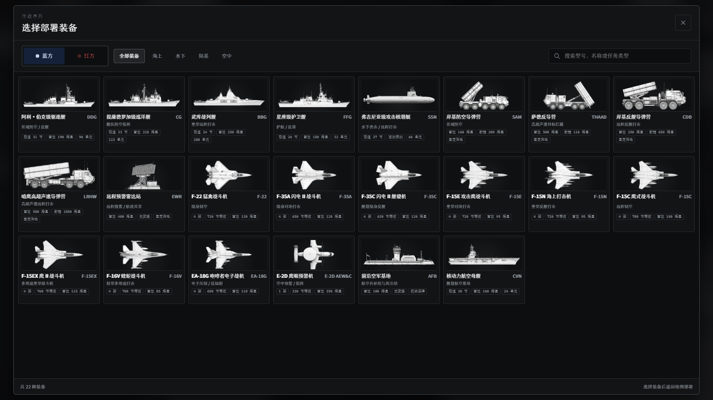
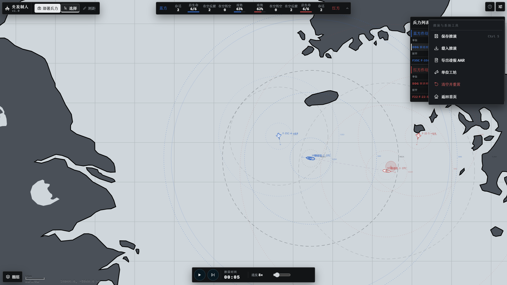
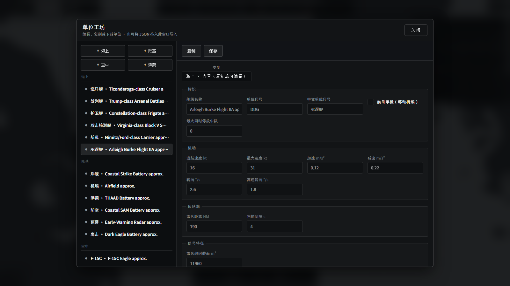

选择一个单位
点选地图符号，右侧会显示当前状态与载弹。
- 1选择蓝方装备
先选阵营，再选一支部队。
- 2在地图部署
确认轮廓合法后单击放置。
- 3切换红方部署
双方至少各有一个单位。
- 4播放并观察
从慢速开始，关键时刻暂停。
- 5读取航迹与战果
结合战况、详情与事件判断。
认识控制台
黄色边框表示可讲解区域。悬停或键盘聚焦即可查看说明。
蓝方存活2总生命4/4
50%
46%总生命4/4存活2红方
50 km
推演时间00:00
装备部署
选择阵营和装备，再到地图确认位置是否合法。

运行判读
结合顶部战况、地图航迹和单位详情判断局势。
系统工具
保存、载入、导出战报或进入单位工坊。

单位工坊
内置单位只读。复制后修改参数并保存。

快捷键与排障
遇到问题时，先检查当前模式、双方兵力和部署地形。
- Space
- 播放 / 暂停开始推演或停在当前时刻。
- .
- 单步推进暂停并推进一个短时间片。
- R
- 测距切换地图测距工具。
- Esc
- 结束部署取消当前工具或连续部署。
- Tab
- 循环选择单位地图获得焦点时依次切换。
- Delete
- 删除单位仅部署阶段可用。
- 滚轮
- 缩放地图以光标位置为中心调整比例。
- 中键 / Alt 拖动
- 平移地图不改变单位位置。
为什么不能开始推演？
蓝红双方至少各需要一个存活单位。查看顶部战况是否仍有一方为 0。
为什么不能部署？
推演开始后不能添加单位。部署阶段出现红色轮廓时，按提示更换地形或位置。
为什么看不到目标？
单位只依据本方传感器和共享航迹行动。打开航迹与雷达图层，检查探测范围和航迹质量。
如何避免丢失进度？
在系统工具中保存到本地推演库，或下载 JSON 文件。重置或刷新前先保存。
现在可以在完整沙盘中完成同样的步骤。
进入沙盘开始推演